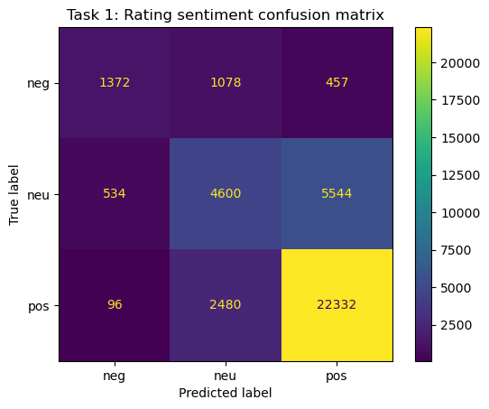
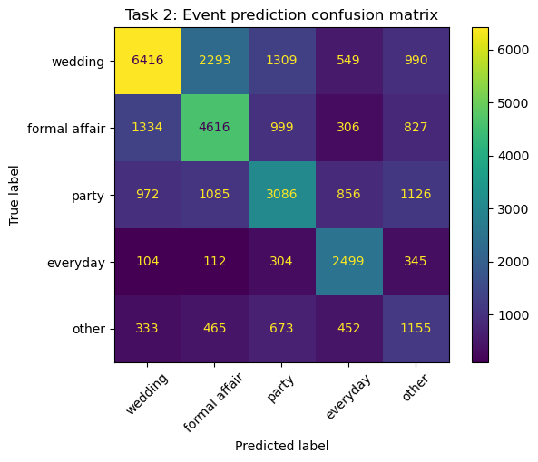
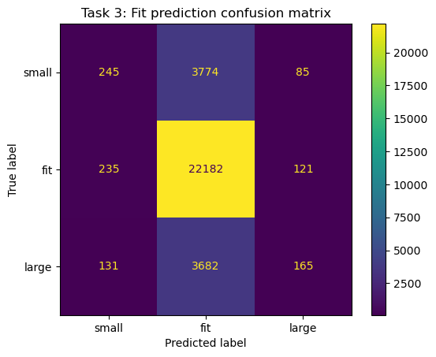

Rent the Runway: A Case Study in Data-Driven Fashion
Can a dress review predict if it'll fit?
Three prediction tasks on 190,000+ Rent the Runway reviews — using customer language and body metadata to predict sentiment, event type, and fit. The short answer: text is powerful, fit is hard.
Results at a Glance
Predicting Review Sentiment
Given only the text of a review, can we classify whether a customer had a positive or negative experience? Reviews were labeled by star rating and modeled as a binary classification problem using bag-of-words features.

Predicting Event Type
Rent the Runway customers rent for specific occasions. Can the language in a review reveal what kind of event the dress was worn to? This multi-class task tests whether occasion-specific vocabulary is strong enough to classify intent.

Predicting Fit
The hardest task: predict whether a garment fits as expected, runs small, or runs large. This combines TF-IDF review text with body metadata (height, weight, size, bust, hips) to test whether objective measurements help where language alone falls short.

Full Results
| Task | Baseline Accuracy | Model Accuracy | Lift |
|---|---|---|---|
| Sentiment | 72.1% | 81.0% | +8.9pp |
| Event Type | 40.3% | 59.0% | +18.7pp |
| Fit | 59.8% | 60.0% | +0.2pp |
What I'd Do Differently
TF-IDF treats words as independent signals. A sentence-level embedding model (e.g. BERT, sentence-transformers) would capture context and nuance — especially useful for fit language like "a bit snug in the shoulders."
Instead of classifying fit into three buckets, treat it as an ordinal or ranking problem. "Runs small → true to size → runs large" has natural ordering that a standard classifier ignores entirely.
Body measurements were concatenated as raw features. A better approach would engineer ratio features (e.g. rented size vs. usual size delta) and allow the model to learn interaction terms with text signals.